Week 10
Questions of Description
Questions of Description
Questions of Description
What is the shape of the relationship between a country's
economic output and Internet access?- Here are some questions that you might want to answer with a statistical analysis…
Questions of Description
Image: Alarichall (CC SA 4.0)
How big is the pay gap in the United States? - That is, what is the difference in pay between workers of different genders?
Questions of Description
How does the pay gap depend on the age of the worker?standout
Description
- One thing these questions have in common: They are questions of description.
- They are also questions that can be addressed using linear regression.
- You’ve learned the mechanics of how linear regression works. You know the nuts and bolts of interpreting coefficients and statistical guarantees.
- But how do you build a model, when the purpose is description. that’s a more strategic level of thinking
- There’s an entire set of concerns that goes into building models for description, and that’s going to be out topic in this unit.
Plan for the Week
Preamble
Three modes of model building
Three sections about descriptive modeling
- Capturing nonlinear relationships
- Measurement with controls
- Modeling conditional effects
Plan for the Week (cont.)
At the end of this week, you will be able to:
- Understand how three major modes of model building lead to very different models
- Balance design goals when creating a model for description
- Plan a set of model specifications for a regression table
What Is Linear Model Building?
What Is Linear?
- Before we talk about model building, let’s review a basic definition. What makes a linear model linear?
- Here’s our classic linear model equation, you know this is linear, but why?
- You might answer,
- Here’s a model, where we’ve squared X. If you think about it, this is the equation for a parabola, not a line. But actually, you can run an ols regression on this, no problem, because
- Another example, where we’ve taken logs of Y and X. That’s no longer the equation for a line, but we’ve just created new variables, and we can run an ols regression on them.
- That’s not to say that everything in the world is linear. Here’s an example of an equation that’s not allowed in OLS
- But I’m hinting at the fact that there’s a lot more flexibility in the linear model than you might think at first.
What Is Linear Model Building?
How do you select from all the possible linear models?
- Which variables to include, which to exclude
- Whether and how to transform each variable
- Whether to create new variables
- Whether to multiply variables together
- Once you recognize that there are actually a lot of different models that count as linear, you might wonder: how do you choose one?
- Here are some more specific questions that you face as a data scientist
The Model-Building Process
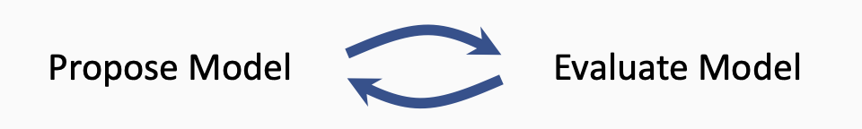
- Modeling goals
- Observations from data
- Background knowledge
- Background theory
- Diagnostic plots
- Measures of fit
- Tests of model assumptions
- Here’s a very very rough schematic, just to emphasize that model building is usually an iteratie prcess. You propose a model, then evaluate it, then make adjustments and propose a new model
- When you are proposing a model, here are some of the factors that will guide your decision
- And when you are evaluating
- In the following segments, we’re going to dig into all of these components, and give you an idea of wha this process is like
Modes of Model Building
An Important Question to Keep in Mind:
standout
What are your goals?
- If I can give you one piece of advice as you start model building, it’s to keep this question in your mind: what are your goals?
- Depending on what your modeling goals are, even if you have the same data, you may end up with very very different models.
- That’s true of linear regression specifically. A statistician, a political scientist, and a machine learning researcher can all use linear regression on the same data, but the models will look very differerent. Those differences can be traced to the different goals that each of those people have.
Three Modes of Model Building
- Predictive modeling: What value can we expect for data we haven’t seen?
- Descriptive modeling: How can we make sense of the patterns in data?
- Explanatory modeling: How can we measure effects inside a causal theory?
- So there is a large variety in the way that people in different fields build models.
- At the same time, we can identify three major modes of model building that account for most of the variety we see: predictive, descriptive, and explanatory. It’s important that you understand the differences between them, and the goals that are common in each one.
Predictive Modeling
Prediction: making guesses for unknown values
For new people, new pictures of cats, or other units
For future time periods
A key focus of machine learning and time series analysis
- Let’s start with predictive modeling. When we say prediction, we mean computing a guess for data we haven’t seen.
- It could be new people. Ex: you get data about a patient’s symptoms and you want to predict if they have an immune disorder.
- It could also be future values. Ex. given the last 3 years of data, how many waffle irons can we sell next december?
- When we think about predictive modeling, the field that immediately jumps to mind is machine learning, especially supervised machine learning. But a lot of time series analysis is also very focused on prediction.
Key Goals of Predictive Modeling
- Accurately predict values
- Be interpretable by humans (usually less important)
Implications for linear regression
- Hundreds of variables, or more
- Variable selection by algorithm - False discovery: Out of many variables, some will look important by chance.
- Coefficients usually don’t have meaning
Descriptive Modeling
Description: summarizing or representing data in a compact, human-understandable way
- Gain understanding by interpreting the model’s internal structure
- Popular in statistics, but ``not commonly used for theory building and testing in other disciplines’’ \ —Shmueli, Galit. _ To Explain or to Predict?_
- Descriptive modeling is really popular among statisticians, but not very popular outside of statistics. Why? Associations are not Causations
Key Goals of Descriptive Modeling
- Measure complex concepts
- Capture features of the world
- Simplify phenomena to make them understandable
- Highlight associations
- Generate hypotheses
Implications for linear regression
- Parsimonious models
- Use of logarithms and other transforms with clear interpretation
- Long build process relying on EDA
Explanatory Modeling
Explanation: using data to test or estimate parameters in a causal theory
- Explanation lets us reason about actions
- Common mode in economics, political science, epidemiology, psychology, environmental science…
- Causal assumptions are required to make causal claims
- Why is this important? Because we may want to learn something from a model and then DO something. Maybe we want to set a policy to improve public health. Maybe we want to change our prices to increase profits.
- Business problems are also usually causal. You want to know what will happen if the business changes its prices, or adopts a new policy. You don’t care if lower prices are associated with more profit, you want to know what will happen if you actually change the prices.
- I want to point out something in our definition - the causal theory is there first, then we combine it with data. It may not be a big Theory with a capital T. However: You always need to start with some causal background information. We’ll come back to this point in our unit on explanatory modeling.
Key Goals of Explanatory Modeling
- Measure a causal effect.
- Evaluate a theory.
- Predict the consequences of potential actions.
Implications for linear regression
- Variable selection is guided by causal theory
- Models oriented to perform a specific measurement
- Key challenge is the operationalization gap between theoretical constructs and variables
Three Modes of Model Building
- Predictive modeling: What value can we expect for data we haven’t seen?
- Descriptive modeling: How can we make sense of the patterns in data?
- Explanatory modeling: How can we measure effects inside a causal theory?
- So there you have the three major modes of model building. We’ve seen that each of them has very different goals, which leads to quite different linear models. Let me also point out that the divisions aren’t always that clear. In descriptive modeling, a key goal is capturing features of the joint distribution. But of course, that can also help us to make sense of an explanatory model. In fact, trying to capture features of the joint distribution can sometimes lead you to more accurate machine learning models for prediction.
- But as you keep learning, it can really help to pay attention to which of the three main modeling modes you’re working in..
Introduction to Descriptive Modeling
How Would You Describe These Data?
- If you had to describe this data over the phone, how would you do it? Take 10 seconds, and try to say a few words about it right now.
- What words are you using? Slope? Decreasing? Maybe hyperbolic or exponential?
- If you used any of those words, really, what you’re doing right now is descriptive model building
- You may be doing it very informally, or even subconsciously, but you’re probably imagining a smooth curve passing through these points and describing that curve.
Introduction to Descriptive Modeling
Description: summarizing or representing data in a compact, human-understandable way
Linear regression is a tool that can help us answer:
- What patterns exist in a dataset?
- What is the shape of a specific relationship?
- What is the size of a feature or effect?
- Let’s review what Description means.
- There are many tools we can use for describing data. There’s clustering algorithms, principle component analysis, and linear regression is also a description tool
What Does It Take to Build a Descriptive Model?
Skill, art, and a lot of iteration
- No causal theory to constrain model choice
- Often many ways to operationalize concepts
- Need to balance many competing goals
- Takes time to build intuition in many dimensions
- All together this can be a very creative form of model building.
- It’s our main topic for today - I hope you’re excited to dive in.
Logarithms
A Question of Development
How does the economic productivity of a country relate to Internet access?
Data taken from the World Bank
- GDP per capita
- Internet users per 100
Is OLS Regression Appropriate?
- Here’s a graph of our data.
- You can see it has this very interesting pattern - a very nonlinear pattern. Try taking your finger, and drawing a line to represent this data. Take a moment to think about this question: is it ok to run a linear regression? here?
- The short answer is that you can absolutely run an ols regression. We know that OLS coefficients are consistent for the best linear predictor, as long as the best linear predictor exists and is unique. (there is another assumption to worry about, which is iid. Can you really believe that countries are independent from each other? I’m skeptical, but there are a lot of country-by-country studies out there, so let’s note the problem as a limitation but keep going.)
Interpreting the Level-Level Model
\(\widehat{users} = 2.4 + .0021\ GDP\) Interpretation 1: A country with an extra $ 1 of GDP per capita is predicted to have another .0021 Internet users per 100.
Interpretation 2: A country with an extra $ 1,000 of GDP per capita is predicted to have another 2.1 Internet users per 100.
- Here’s are the results of fitting the ols regression
- Here’s how we would interpret the coefficient…
- Both of these numbers are really small. So we can improve this interpretation by choosing a bigger change…
Does OLS Regression Meet Our Goals?
- Here’s what the regression line looks like. We know this is valid as far as ols assumptions.
- But does it meet our goals? In particular, one of the main goals of descriptive modeling is capturing features of the world.
- There’s a clear structure that is not reflected in our model.
- If you look in the middle section, you can see that the prediction is consistently too low. At the extremes, the prediction is too high.
- There’s one other small problem that’s worth mentioning. it’s only a minor problem, but notice that most of the data is clustered on the left side. The slope of the line is mostly determined by these few points on the right side. that’s ok, but there’s these points on the left potentially have important information that’s not really making it into the model.
- For all these reasons, we need to consider a variable transformation.
Variable Transformation
Replace $X$ with $f(X)$ for some $f: \R \rightarrow \R$\note[item]{What function $f$ should you use? Here are some of
the most common choices.}- $\ln(X)$- \(\log_{10}(X)\)
- Indicator functions
- \(X^a\)
- Polynomials(X)
- Transforming a variable, means that we’re replacing some X with a function f(X)
Taking the Log of GDP
- Here’s what the data looks like after you take a log of GDP per capita. Can you draw a line through it? Much easier!
Taking the Log of GDP
- And here is the new regression line, which matches the shape of this relationship.
Model: \(\widehat{users} = \beta_0 + \beta_1 \ln GDP \quad\quad R^2 = .68\)
- There’s another way to view this model. Let’s go back to the original x-axis, without the log
- If we do that, this is what our model looks like
- This is a logarithmic curve. That makes sense. Our model says that predicted internet users is a linear function of the log of GDP.
- Think about it this way, we took the log of X and revealed a straight line in the scatterplot. That tells us that we have a logarithmic relationship.
Interpreting and Applying Logarithms
Interpreting Logarithms
Base 10 log \(\widehat{users} = -66.5 + 32.0 \log_{10} GDP\)
Interpretation: adding a 0 to GDP associated with 32 more Internet users per 100
Base \(e\) log \(\widehat{users} = -66.5 + 13.9 \ln GDP\)
Interpretation: multiplying GDP by a small \(1+\alpha\) associated with
\(13.9 \alpha\) more Internet users per 100
- There are actually two common choices for the logarithm, you can take a base 10 log, or a natural log
- A base 10 log is helpful when we want to think about a variable in powers of 10. We’re all used to powers of 10.
Interpreting Logarithms (cont.)
\(\frac{\partial \widehat{users}}{\partial GDP} = \frac{\partial}{\partial GDP}[ -66.5 + 13.9\ln GDP ]\)
- \(\frac{\partial}{\partial x}\ln x = 1/x\)
Model:
$\widehat{users} = \beta_0 + \beta_1 \ln GDP \quad\quad R^2 = .68$Let’s see what that rule of thumb looks like on the graph. Let’s choose some point on the curve, GDP = 10,000.
I’m going to draw the tangent line at that point - it’s a good approximation for small changes in GDP.
I know the slope of the tangent is 13.9/GDP
Let’s say that I increase GDP by some proportion,
What’s the change in Y? I multiple the change in X by the slope and I get
If alpha is small, then the tangent line is close to the curve, so this is a good approximation.
For example, if we increase GDP by 1
But if you think about really big changes: 30
Other Uses of Logarithms
Log-linear form: \(\ln Y = \beta_0 + \beta_1 X\) - Interpretation: \(\frac{\Delta Y}{Y} \approx \beta_1 \Delta X\) - Example: add 0.1 to \(X\) \(\rightarrow\) add \(0.1 \beta_1 \cdot Y\) to \(Y\)
Log-log form: \(\ln Y = \beta_0 + \beta_1 \ln X\) - Constant elasticity model - Interpretation: \(\frac{\Delta Y}{Y} \approx \beta_1 \frac{\Delta X}{X}\) - Example: increase \(X\) by 1 % \(\rightarrow\) increase \(Y\) by \(\beta_1 \%\)
When to Apply Logs
What makes a variable a good candidate for a log transform?
- Always positive - Don’t add a constant to make variable positive
- Spans multiple orders of magnitude
- Clustered near zero with high outliers
- Percent changes are meaningful
Power Transformations
Power transformation: Replace \(X\) with \(X^\alpha\) for some
\(\alpha \in \R\) .
\(\sqrt{X}\) behaves similarly to \(\ln X\) .
\(X^2\) , \(X^3\) ,… spreads values far from zero further apart.
Interpretation is more difficult than with logs.
- I want to very quickly mention a broader class of transformations, called the power transformations
- Here, we’re raising X to a power.
- For example, you might take the square root of X in situations where you can’t take the log, because a variable sometimes equals zero.
- However, these transformations make it much harder to interpret the results of a model, so they’re not used very often in descriptive modeling.
When to Apply Transformations
Question: Should you always transform your variables to make them normal?
- Normal variables are never a requirement for OLS regression. - Even in the classical linear model, errors are normal, not variables.
\(\implies\) Don’t focus too much on normality. Capturing relationships is more important.
- Before we move on, I want to address one issue, a lot of websites will tell you to always transform your variables until they look normal. Is that a good idea?
- Well, first of all, normal variables are never a requirement for ols. Even in the classical linear model, the errors must be normal, not the variables. Of course if you’re in a large sample, there’s no assumption of normality at all.
- But I will say that normal variables are generally a good thing. Normal means that most of your data isn’t so clustered that it doesn’t affect the model. So it’s good to try for normal variables, but bad if that’s the only thing you’re thinking about
- Remember, your goals for descriptive modeling. In particular, transforms are great for the goal of capturing features of the world. that means looking at scatterplots, and trying to reveal linear patterns. If you can make your scatterplots look linear, that’s usually much more important than having nice normal distributions.
Polynomials
How Can We Improve Predictive Accuracy?
- Here’s another look at our GDP and Internet User data. Previously, we used a log transform. That was good for capturing the shape and great for model interpretability.
- What if I tell you that your goals are little different. You still care about interpretation, but you really want more accuracy. You’d be willing to give up a little bit of interpretability to get a higher
- In that case, you might want to consider a polynomial regression.
Polynomial Regression
Motivation: Polynomials can approximate any continuous function (e.g. Weierstrass theorem)
Quadratic:
\(\widehat{Users} = \beta_0 + \beta_1 GDP + \beta_2 GDP^2\) - OLS finds the parabola that minimizes MSE.
Cubic:
\(\widehat{Users} = \beta_0 + \beta_1 GDP + \beta_2 GDP^2 + \beta_3 GDP^3\) - OLS finds the cubic function that minimizes MSE.
- First, why polynomials? well, polynomials are really flexible. They can approximate any continuous function.
- The idea here is we’re going to run a regression with different powers of the same variable.
- Most of the time, we’ll use just a quadratic. So we’ll put in GDP and
- What will ols regression do? ols finds the beta’s that minimize MSE. If you change these betas, you get all the different parabolas in the X-Y plane.
- You can also put in the cubic term, though that’s much less common.
A Parabolic Pattern?
- Let’s try the quadratic form.
- Here’s the data again. I want you to imagine what you think the best fitting parabola looks like. try tracing it with your finger.
Model:
$\widehat{users} = \beta_0 + \beta_1 GDP + \beta_2 GDP^2
\quad\quad R^2 = .66$ 
- There you have the best fitting parabola
- You can see that it definitely looks closer to the data than the line. The fit is actually slightly worse
Interpreting the Quadratic Specification
\(\widehat{Users} = 18.5 + .0048\ GDP - 8.0\cdot 10^{-8}\ GDP^2\) \(\frac{\partial \widehat{Users}}{\partial GDP} = .0048 - 1.6\cdot 10^{-7}\ GDP\)
Example 1: If \(GDP = 10,000\) , then
\(\frac{\partial \widehat{Users}}{\partial GDP} = .0032\) .
(Extra $ 1,000 in GDP associated with 3.2 extra users)
Example 2: If \(GDP = 20,000\) , then
\(\frac{\partial \widehat{Users}}{\partial GDP} = .0016\) .
(Extra $ 1,000 in GDP associated with 1.6 extra users)
- Here’s the equation with the fitted coefficients
- What’s the interpretation of this equation?
- Let’s look at the slope… we get a function - the partial depends on GDP
Higher-Order Polynomials
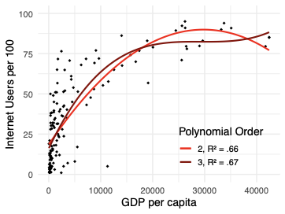
- what happens if we increase the order of our polynomial?
- Here you can see the best fitting cubic function. Notice that the
- The curve looks a little better at the end, it doesn’t turn downwards.
- How far can we push this? can we keep increasing the order of the polynomial and keep getting better and better predictions?
Higher-Order Polynomials
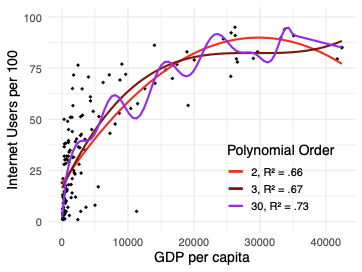
- Here, I tried to fit an order 30 polynomial. Indeed, the
- But the shape doesn’t make sense. Why would internet users go up and down with GDP?
- Especially on the right hand side, you can see that the curve traces from one point to the next.
- This is a situation called overfitting. We have a high
Measurement With Controls
Measurement With Controls
Note: This is a placeholder slide for an introduction that we will provide to the section. We’re just placing it here for organization.
Interpreting Indicator Variables
Example: Measuring the Wage Gap
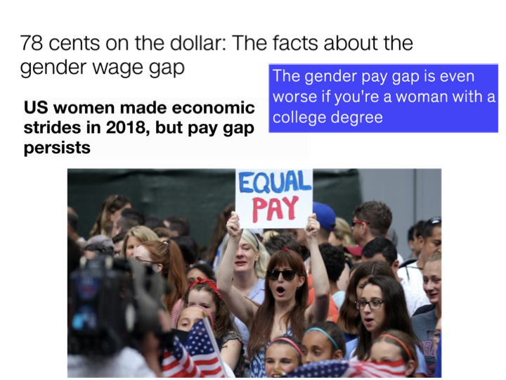
- Let’s take a look at an example measurement goal. The example we’ll use is the wage gap.
- You probably already know about the wage gap - newspapers in the US talk about it from time to time.
- In particular, you may have heard this figure: that a woman in the US earns 78 cents for every dollar that a man earns
- I hope you agree that this is an important topic - we would like to live in a country where people of all genders are paid equally
- But how can you actually measure the wage gap? Should we compare all men and all women? Or men and women in the same job? But is that a fair comparison if people of different genders don’t get the same job opportunities? There’s really no easy answer to these questions. But let’s at least try measuring the gender gap and see what linear regression techniques may help.
Example: Measuring the Wage Gap (cont.)
Data: Current Population Survey, 2019 Annual Social and Economic Supplement (ASEC)
Key variables:
- Status: full-/part-time work status - 1: not in labor force
- 2: full-time hours (35 or more), usually full-time \
- Pay: total wage and salary earnings
- Sex - 1: male
- 2: female
- In the survey, there is an income variable, and unlike most surveys, it’s not binned into ranges, it’s any integer.
- The survey has no variable for gender, and it has one variable labeled sex. You can see It only has two levels, male and female. This is not a best practice, because it means that transgender and non-binary people may feel like they don’t have an option. Unfortunately, I have to say that we’re filming this in 2020, and this is still what most big surveys are like.
Overall Comparison
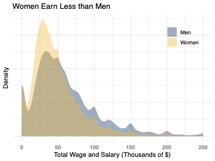
- First, let’s try the simplest thing we can do: comparing all men against all women.
- Actually, we’ve seen this problem before. When we talked about t-tests, we had two groups, and we wanted to know if the means were the same.
Direct Application of t-Test
Mean for men: $ 68,700
Mean for women: $ 52,100
Mean difference: $ 16,600
(76 cents to the dollar)
\(t = 27.938, df = 61,733, p< 2.2e-16\)
- Here are the results of that t-test analysis.
- You can see man pay for men about 69K, 52K for women,
- That corresponds to about 76 cents to the dollar
- The t statistic is giant - almost 30, so the null is overwhelmingly rejected
- Now, what about linear regression? Well, it’s important to realize that this exact analysis can be done in a regression framework.
The Same Analysis in a Regression Framework, Part I
\(\widehat{Pay} = \beta_0 + \beta_1 Female\)
For men, \(\widehat{Pay} = \beta_0 + \beta_1 (0) = \beta_0\) .
For women,
\(\widehat{Pay} = \beta_0 + \beta_1 (1) = \beta_0 + \beta_1\) .
\(\implies \beta_1\) represents the difference between groups.
- This may seem like a strange view of regression - aren’t we supposed to be fitting a line?
The Same Analysis in a Regression Framework, Part II
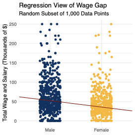
\(\Delta Y = \frac{\text{slope}}{\Delta X}\)
- Well, there is a line. Here’s what the data looks like if we plot it, and here’s the regression line.
- (I took a small subset and added a little jitter so you can see things better.)
- Since we have an indicator variable, the only x values are 0 and 1
- What’s the difference in in the predicted Y?…
- I can write:
The Same Analysis in a Regression Framework, Part III
- When we look at our regression output, the coefficient for Female will have exactly the same difference in means that we say earlier.
- One more thing to note: we usually show a standard t-test for each coefficient. Here, we have 3 stars for Female. The null of that test is that the slope is zero, which we know means that men and women are the same. So this is exactly the same as the classic t-test for two groups.
- Here’s another question to think about: what do the stars on the intercept mean?
- Remember that the intercept represents the mean pay for men. This is the test to see if men earn 0 dollars. So that’s a very silly test to run. But we do put in the stars anyway, just to be consistent.
- How do you know if Women earn zero dollars? We don’t have that test here. we’d have to run a separate command to get that test.
Indicator Variables as Controls
Controlling for Occupation, Part I
How can we compare men and women in the same occupation?
- So far, we’ve just been comparing men as a whole to women as a whole
- But part of the difference we see could be that men and women tend to be in different professions
- Now, you might argue, so what? If the main problem is that women are being locked out of high-paying professions, it’s the overall pay difference that we should be worried about.
- But at least from certain perspectives, it might be more fair to compare men and women in the same profession.
- I’m going to try it both ways, because I think we can learn from the results
Controlling for Occupation, Part II
\(\widehat{Pay} = \beta_0 + \beta_1 Female + \beta_2 Banker + \beta_3 Engineer + ...\)
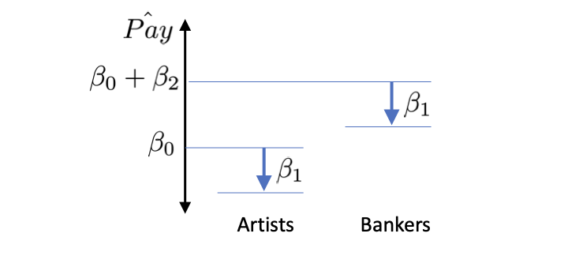
- What we need to do, is add an indicator variable for every possible occupation (we need a base category, let’s make it artist).
- What does this do? Here’s a picture of what the model looks like.
- If you want to know the predicted pay for a female Banker, you start with
- The thing to notice is that
Controlling for Occupation, Part III
- Inside the survey data, we have an occupation code variable with 484 different values. If you just add it to the table directly, you have a problem.
- Of course there’s not enough room to list every occupation
Controlling for Occupation, Part IV
- So instead we can put in a row to summarize all these indicators.
- You can see that actually, the effect for Female has shrunk by about 10 percent in this specification. That corresponds to about 78 cents to the dollar.
- Why is that? This suggests, that in part, there are more men in occupations with higher pay. But even within each occupation, men are earning more than women.
Metric Variables as Controls
Age as a Covariate
Ways to add age to a specification
Linear effect:
\(\widehat{Pay} = \beta_0 + \beta_1 Female + \beta_2 Age\)
Polynomial effect:
\(\widehat{Pay} = \beta_0 + \beta_1 Female + \beta_2 Age + \beta_3 Age^2\)
- We’re trying to measure the pay gap, and another variable that we might want to control for is age
- People tend to earn more as they get older, and you might wonder if this can explain part of the pay gap that we see.
- How should we enter age into the regression?
- You could put it in directly. That would make sense if you wanted to measure the age effect and wanted a single number to summarize the effect.
- If, on the other hand, age is really just a control variable, you might want a more flexible specification, just to soak up as much variation as you can. For example, a quadratic age term is a ver popular choice.
- Let’s use the linear age model to make the equations simpler.
Understanding the Linear Age Effect
For men:
\(\widehat{Pay} = \beta_0 + \beta_1 (0) + \beta_2 Age = \beta_0 + \beta_2 Age\)
For women:
\(\widehat{Pay} = \beta_0 + \beta_1 (1) + \beta_2 Age = \beta_0 + \beta_1 + \beta_2 Age\)
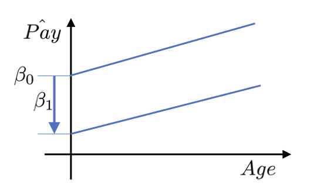
Controlling for Age
Here’s the regression table, with the new specification added in. You can see that each year of age is associated with
Also, adding age didn’t change the gap between men and women at all.
Does that mean we should take this specification out of the table?
Well, no. This is all interesting information. We’re building up a table that shows how our estimate changes or doesn’t change depending on our choices.
If we keep trying different specifications and the estimate for Female never changes much, we’ll say that it’s robust.
Measuring With More Categories
National Transgender Discrimination Survey
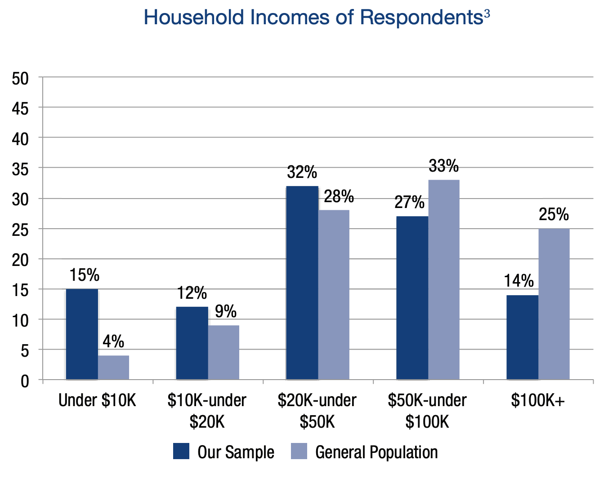
- Because of our data source, we had two categories for gender - male and female.
- What if you could write your own survey - could you make it more inclusive by listing more options?
- How would you analyze the data?
- That could be an important question. I’m showing a graph from the National transgender discrimination survey. This is not a nationally representative survey, but out of the trans and nonconforming people they were able to reach, 15
Example of a More Inclusive Question
How would you describe yourself?
- Female
- Male
- Transgender female
- Transgender male
- Non-binary/nonconforming
- Prefer not to answer
- Here’s an example of a question with more options. We’re not claiming this is the best possible set of choices - but the intention is to provide options that more people identify with. We would like to see more surveys try to do this.
Analyzing More Gender Categories
\[\begin{align*} \widehat{Pay} = &\beta_0 + \beta_1 Female + \beta_2 Transgender\_Male + \\ & \beta_3 Transgender\_Female + \beta_4 Nonbinary \end{align*}\] \(\implies\) Report each \(\beta\) to describe the pay gap for a different gender identity.
- Now we need to include each option as an indicator variable. In this case, I’m using male as a base category, because then each beta compares a gender against male, which is something we’re very interested in.
- Now what could happen here? It might be that you just don’t get enough data in some categories. That would make your standard error for those categories too high. So that means that you need to be careful about adding too many options.
- If you face this problem, you may be able to combine some categories together in order to gain accuracy.
Reporting Overall Effect
Law of total variance:
\(V[Pay] = V\big[E[Pay|Gender]\big] + E\big[V[Pay|Gender]\big]\)
\(V[Pay] =\) Gender-Explained Variance + Other Variance
\(\eta^2 = \frac{\text{Gender-Explained Variance}}{\text{Total Variance}}\) \(\text{Gender-Explained Standard Deviation} = \sqrt{V\big[E[Pay|Gender]\big]}\) F-test: Null is that all genders have equal pay.
- On the one hand, you may really be interested in each individual
- One idea is to break up the variation in pay and see how much of it can be tied to gender. remember the law of total variance from earlier…
- eta squared is defined as a fraction, of the gender-explained variance over the total variance. You can think of it as how much of the total variation can be explained through gender.
- Another idea is to take the gender-explained variance and take the square root, to give gender-explained standard deviation:
- This gives you a single number in dollars, that tells you, on the average, how far each gender is away from the overall mean pay.
- Finally, how do you test the statistical significance of gender when you have multiple categories? the right answer is the F-test.
Planning Multiple Specifications
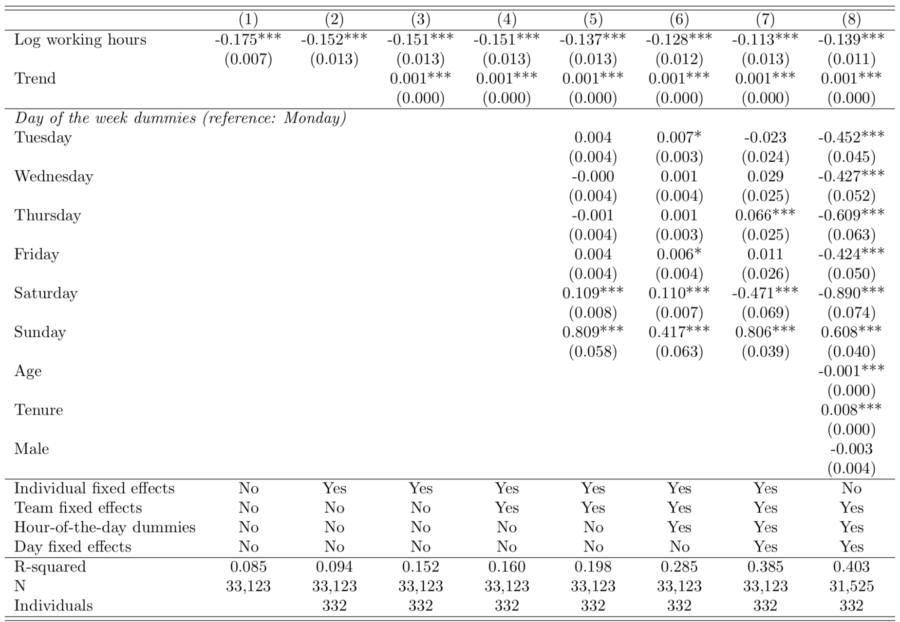
- We’ve been building up a regression table for our study, and so far it has three models in it - we might say three specifications.
- That’s not at all unusual. Actually, if you write articles in some fields, it’s common to include many more specifications. Here’s a table from a paper on working hours and productivity..
- You can see that there are 8 specifications. Model 1 only has a single variable - that’s the effect that they want to measure. Then for the most part the models on the right have more and more variables.
- What’s the purpose of this?
Why Report Multiple Specifications?
Modeling decisions are tough.
Is it worthwhile to control for education, even if standard errors increase?
Is it worth switching from a log to a square root to get a much better fit?
Should we include occupation, even if that absorbs some of the concept we want to measure?
Would your results be different with different choices?
\(\implies\) Try different paths to see if your results are
robust .
Why Report Multiple Specifications? (cont.)
Error rate inflation: a tendency for effects to appear large (and p-values small), especially when a researcher uses the same data for exploration and testing
p-Hacking: a deliberate attempt to generate significant results by altering the model specification and other researcher degrees of freedom
\(\implies\) Report multiple specifications to guard against error rate inflation.
- There’s a deeper reason that we report multiple specifications, and it has to do with reproducibility.
- Let’s review two very important terms…
- If you have a lot of data, you may be able to hold out some of it, so you can get your final p-values from fresh data. But even if you do that, your audience may just expect to see multiple specifications, and may be more suspicious if they only see one.
How Should You Think About Specifications?
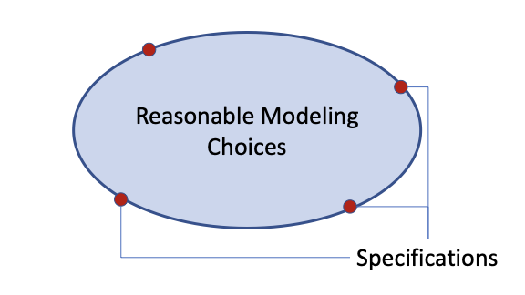
- With all that in mind, how should you think about your model specifications?
- Imagine a space that represents reasonable modeling choices
- They still have to reasonable - you shouldn’t consider models that can’t be defended
- Try to select your specifications to encircle that space, so your results can represent the larger set of choices.
An Example Specification Table
- Let’s take another look at our own specification table.
- A few things to remember. First, this is a measurement study, and our key variable is Female. So we place it on the first row, and of course it has to appear in every single specification.
- One thing you almost always want to do is start with a base model, that only has your key variable and nothing else. If you have a very strong reason to put in another variable, that’s ok, but you want this to be a very minimal model.
- It’s very common to add variables in blocks as you go left to right. If you do that, then your models will be nested, which means that you can run F-tests between them. But you don’t have to do that. if it makes more sense to replace one set of variables with another, do that instead.
Modeling Conditional Effects
Conditional Effects
Conditional Effects
Idea: The relationships we measure may be different for different people or units.
- A vaccine may reduce infection rates more in adults than in children.
- Network access may be more associated with loan availability in poor countries.
- The pay gap may be different for people of different ages.
- Let’s take a closer look at that last example…
Conditional Effects of Age, Part I
Interaction term: a variable in a regression formed by multiplying two other variables together
\(\widehat{Pay} = \beta_0 + \beta_1 Female + \beta_2 Age + \beta_3 Female \cdot Age\)
For men:
\(\quad \widehat{Pay} =\)
For women:
\(\quad \widehat{Pay} =\)
- There’s a simple technique for modeling heterogeneous effects. it’s called an interaction term. An interaction term is just two of your variables multiplied together.
- Let’s see what this equation looks like for men and for women.
- \(beta_0 + \beta_1 (0) + \beta_2 Age + \beta_3 (0) Age = \beta_0 + \beta_2 Age\)
- \(\beta_0 + \beta_1 (1) + \beta_2 Age + \beta_3 (1) Age = \beta_0 + \beta_1 + (\beta_2 + \beta_3)Age\)
- Notice that these are again two different lines. once again, they have different intercepts. but this time, they also have different slopes.
Conditional Effects of Age, Part II
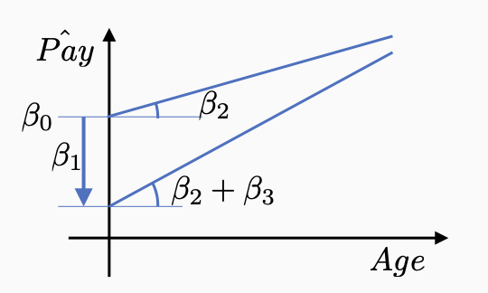
- Here’s what that looks like. we’re fitting a very flexible model, with two different slopes and two different intercepts.
- by the way, how would you test whether the effect really is heterogeneous? that is, how can you test whether the slopes really are different?
- The answer is that the slopes are the same exactly if
Conditional Effects of Age, Part III
- Here’s our result, and you can see it’s pretty interesting. The interaction term is negative and statistically significant. And the wage gap appears larger for older workers. With each year of age, the gap increases by about
Interaction Terms
Interactions for Indicator Variables
Use old content: 12.9 Interaction Terms for Indicator Variables, Part 1
If there’s extra time, I would redo this using the wage gap example.
Guidelines for Polynomial and Interaction Terms
Use old content: 12.12 Guidelines for Polynomial and Interaction Terms
Could redo some of the discussion of goals if there is time.